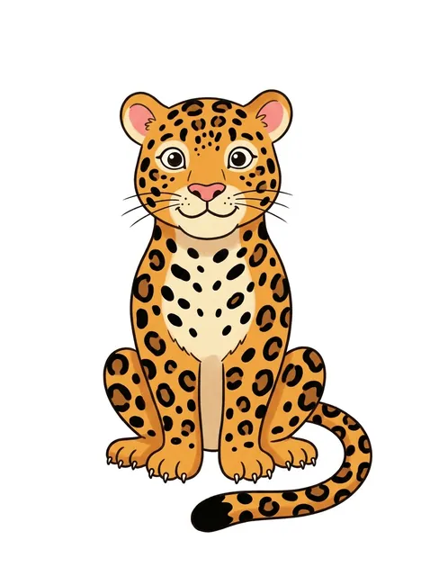
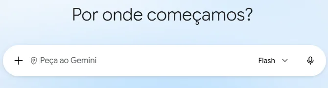
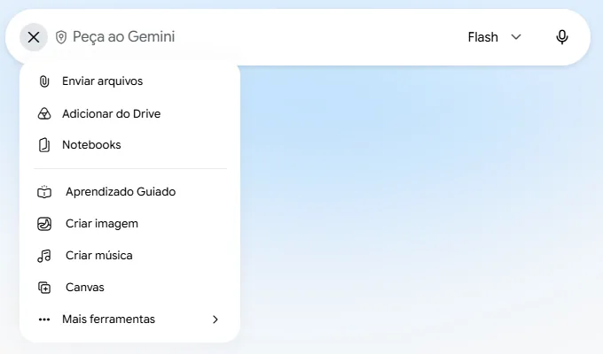
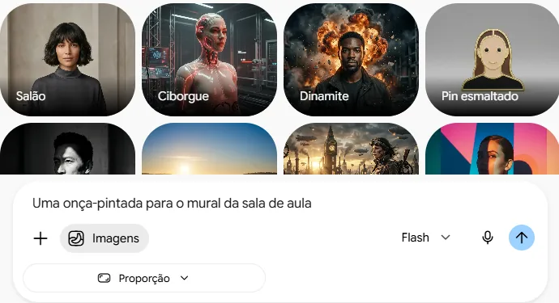
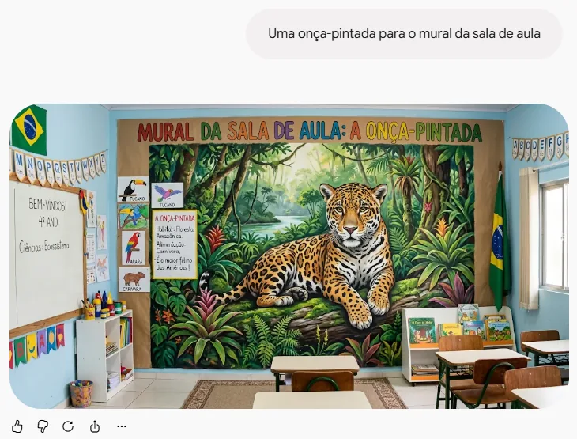
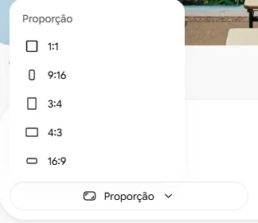
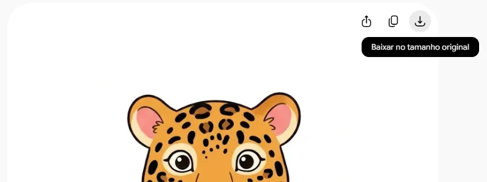
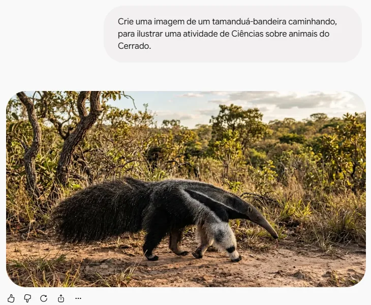
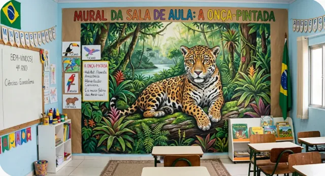
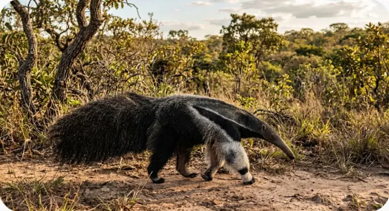

Gerar uma imagem
Peça ao Gemini uma ilustração, descreva o que você quer ver e baixe a imagem. No exemplo, uma onça-pintada para usar no mural da turma.
Você descreveIlustração de uma onça-pintada sozinha, de corpo inteiro. Estilo de livro infantil. Fundo branco liso, sem cenário e sem texto.
o Gemini desenha

Abra o Gemini
- No computador ou Chromebook, com a conta @educa (institucional), como no tópico 3.
- Confira o escudo na caixa de texto: é o símbolo da proteção de dados da conta.
- É o mesmo Gemini que você já usa para escrever. Ele também desenha.

Ative a criação de imagem
- Clique no +, à esquerda da caixa de texto.
- Escolha Criar imagem.
- A caixa ganha a etiqueta "Imagens": a partir daí, o que você pedir vira imagem.

Faça um pedido simples
- Na caixa de texto, escreva o que você quer ver, como falaria com uma pessoa.
- No exemplo: "Uma onça-pintada para o mural da sala de aula".
- A galeria de estilos que aparece em cima é opcional. Pode ignorar.
- Clique na seta para enviar.

Veja o que ele entendeu
- A imagem é bonita, mas não é o que queríamos.
- O Gemini desenhou uma sala com um mural, e não a onça para colocar no mural.
- Ele leu o pedido ao pé da letra. Testamos duas vezes, e as duas deram o mesmo resultado.
- Quando o pedido não diz claramente o que você quer, a IA decide por você.
Ilustração de uma onça-pintada sozinha, de corpo inteiro, sentada e olhando para a frente. Estilo de livro infantil, com traço simples e cores alegres. Fundo branco liso, sem cenário e sem texto. Formato vertical, para imprimir e recortar.
Descreva com detalhes
- Uma boa descrição responde a seis perguntas:
- o quê;
- enquadramento;
- estilo;
- cores;
- fundo;
- formato.
- Cada trecho grifado no comando responde a uma delas.
- Diga também o que você não quer: "sem cenário e sem texto".
- Pode escrever na mesma conversa. O Gemini continua de onde parou.

Escolha o formato
- No botão Proporção, embaixo da caixa, escolha o formato antes de enviar:
- 1:1 é quadrado;
- 3:4 e 9:16 são em pé;
- 4:3 e 16:9 são deitados.
- Para uma folha A4 em pé, escolha 3:4, o mais parecido.
- O botão só aparece com a criação de imagem ativada.
Veja o resultado
- Agora sim: a onça sozinha, de corpo inteiro, no fundo branco, em pé na folha.
- Cada pedido sai diferente, mesmo com as mesmas palavras. Não gostou? Clique na seta em círculo, embaixo da imagem, para gerar outra versão.
- Repare no estilo: sem referência, a IA escolheu um desenho "fofo" comum. No próximo tutorial, você vai dar personalidade a ele.

Baixe a imagem
- Passe o mouse sobre a imagem: aparecem três botões no canto.
- Clique em Baixar no tamanho original. O arquivo vai para a pasta Downloads, em JPG.
- A imagem tem cerca de 900 × 1200 pixels: boa para cartões e meia folha, mas pode perder nitidez num A4 inteiro.
- Guarde no Drive, para achar depois em qualquer computador.

Outra forma de pedir
- Em uma conversa nova, mesmo sem ativar a opção "Criar imagem", comece seu pedido escrevendo "Crie uma imagem de…".
- O Gemini entende e desenha do mesmo jeito. A opção "Criar imagem" apenas deixa a intenção explícita e mostra o botão para escolher o formato.
- Repare: sem dizer o estilo, ele escolheu uma foto realista. De novo, o que você não diz, ele decide.

PedidoUma onça-pintada para o mural da sala de aula
PedidoIlustração de uma onça-pintada sozinha, de corpo inteiro, sentada e olhando para a frente. Estilo de livro infantil, com traço simples e cores alegres. Fundo branco liso, sem cenário e sem texto. Formato vertical.

PedidoCrie uma imagem de um tamanduá-bandeira caminhando, para ilustrar uma atividade de Ciências sobre animais do Cerrado.
Compare os pedidos
- Interativo: toque nos botões para ver cada pedido e a imagem que ele gerou.
- Você criou uma ilustração do zero em menos de um minuto, sem saber desenhar.
- A diferença entre as imagens está no pedido: quanto mais claro, menos a IA decide por você.
- Olhe com atenção antes de imprimir. A IA costuma errar texto dentro da imagem, a contagem de objetos e patas e mãos.